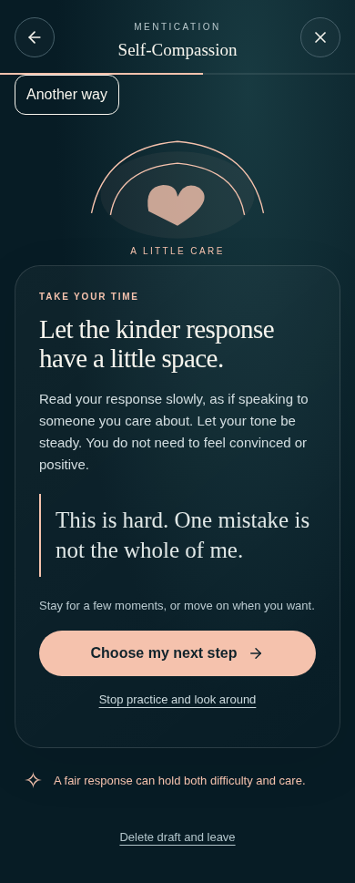
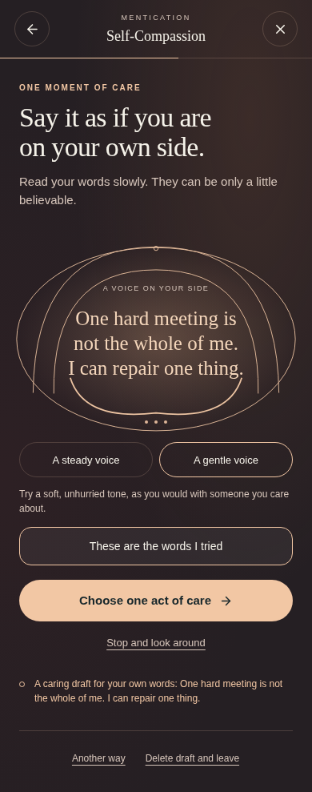
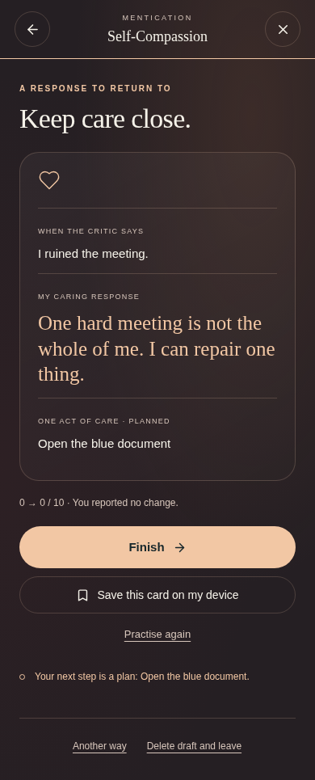
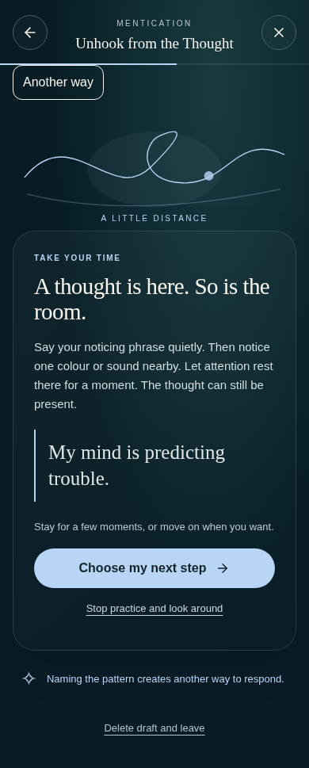
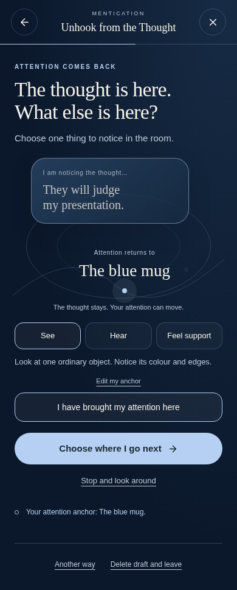
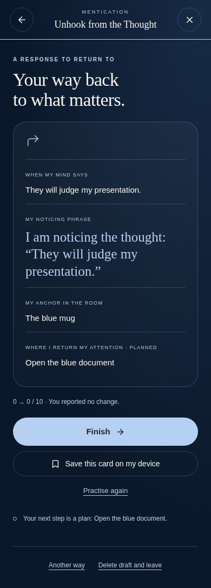
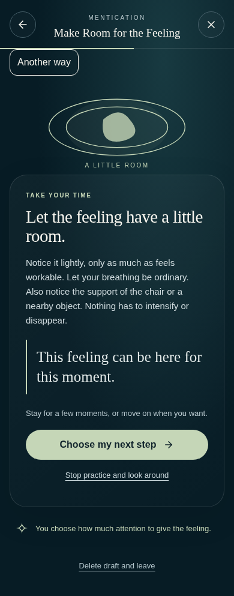
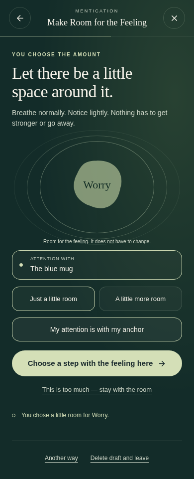
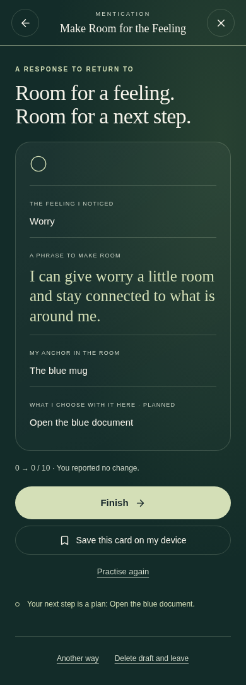

Three different ways to practise.
Actual integrated mobile screens at 390px. The original screens used their default starter examples; the redesign screens show edited personal examples and a chosen external anchor. These are design comparisons, not measurements of therapeutic benefit.
Self-Compassion
From a stock sentence in a worksheet to a caring response built around the chosen critical line, tried in a deliberate tone and carried into an act of support.
Original practice
Redesigned practice
Personal takeaway
Unhook from the Thought
From reading a generic noticing sentence to working with the exact thought, giving it a side position and returning attention to a concrete anchor in the room.
Original practice
Redesigned practice
Personal takeaway
Make Room for the Feeling
From a generic acceptance statement to a named feeling, chosen amount of space and an external anchor. The feeling stays the same; the person chooses what to do next.
Original practice
Redesigned practice
Personal takeaway
Verification: nine integrated mobile flows · six long-input flows · repository checks